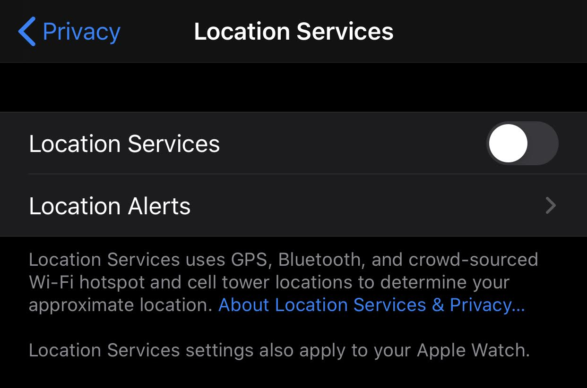

Protest Info¶
Your actions before, during, and after a protest have a single goal:
YOU WERE NEVER THERE!!!
With enough time and money, anyone's location history can be traced. Your job is to limit the number of leads to make it too time consuming or expensive for most people and businesses to link you back to a protest.
Why?¶
Protests are fine and bonding while you are there, but there are many potential repercussions if things go south even long after the protest has finished. Social media activity is commonly included in legal profiles and background checks which could make it hard or impossible to get or retain certain jobs or acquire firearms.
Turn off your phone!!!¶
Turning your phone completely off is by far the easiest way to reduce your chance of being automatically placed at the site of a protest.
There are multiple ways a cell phone or other electronic devices determine your location, all of which require some form of wireless communication:
- Cellular - Cell towers log connected devices. Cell providers sell this info to third-parties for advertizing and location tracking services
- WiFi - Cell phones store a list of WiFi names you've connected to as well as ones you've recently seen but not connected to. These are usually unique enough to corroborate other location evidence
- Bluetooth - By design, Bluetooth broadcasts unique IDs which can be recorded. Data packets can also be sniffed
- GPS - Explicitly designed to determine location. Satellite network doesn't record, but your phone does
- NFC - Short range radio can still be recorded by other devices in a crowd. This is currently only an issue with Android phones because Apple doesn't allow NFC access except for Apple Wallet uses

Warning
Disabling cellular, WiFi, and Bluetooth individually on iOS still leaves GPS turned on.
If you choose not to turn your phone completely off, put it in airplane mode and disable all location services. You can record video and take pictures, but this should disable a location being attached to your photos. And obviously don't share those photos or videos on your social media accounts.
There's an additional benefit to turning off your phone in case you are detained by police: face and thumbprint unlocking is disabled on reboot. Your phone's passcode has historically greater consitutional protections than your face or thumbprint, and the police cannot legally compel you to unlock your phone in this manner without a warrant (which usually come with limits too).
It's dangerous to go alone. Take this!
If you choose to keep your phone on and connected, please install a shortcut like this for iOS that will automatically send your location and a video recording to a chosen contact in case you have issues.
At the Protest¶
Remember, your main goal is to have no way of tracing you back to the protest. In addition to turning off your phone, there are two categories you need to watch out for:
Photo Identification¶
You will inevitably be in a photo or video posted somewhere on the internet. Your goal is to make it as difficult as possible for someone to recognize you after the fact.
- Wear a face covering
- Wear unmarked clothing. No logos. Preferably all black or white
- Ripped clothing can be identifiable
- Cover up any physically-identifying features like tattoos or hairstyles
Covering clothing is also a good way to hide your emergency contact info drawn on your body. Nothing will out you faster than a clearly visible phone number even if it's not your own.
Third-Party Tagging¶
Your want to prevent yourself from being tagged or mentioned in photos or posts by other people who are there or automatically by a company analyzing photos. This requires you to be proactive with your social media accounts which we will discuss below.
Facebook¶
This is the biggest target because most people have been on Facebook the longest. It's very easy to get a full snapshot just from Facebook data including:
- Profile info
- Pictures
- Posts
- Comments
- Family (including everything on their profiles)
All links below send you to the Facebook help center, so the instructions should always be accurate.
Note
Some field options like "Only Me" may only be visible by pressing "More" first.
Your Profile¶
Parts of your profile may always be searchable. It's important to remove or obscure the following information:
- Change your profile photo to something unidentifiable
- Change your cover photo
- Untag yourself from all posts and photos relevant to the protests
- Remove these from your profile's About section:
- Work and Education
- Places Lived
- Family and Relationships
Settings -> Privacy Settings¶
Your Activity
- Who can see your future posts - Friends
- Limit who can see past posts
- Who can see the people, Pages, and lists you follow - Only Me
How People Find and Contact You
- Who can send you friend requests - Friends of Friends
- Who can see your friends list - Only Me
- Who can look you up using the email address you provided - Only Me
- Who can look you up using the phone number you provided - Only Me
- Do you want search engines outside of Facebook to link to your profile - No
Settings -> Timeline and Tagging¶
Timeline
- Who can post on your timeline - Only Me
- Who can see what others post on my timeline - Only Me
- Allow others to share your posts to their stories - Off (no official help doc found)
Tagging
- Who can see posts you're tagged in on your timeline - Only Me
- When you're tagged in a post, who do you want to add to the audience of the post if they can't already see it - Only Me
Review
- Review tags people add to your posts before the tags appear on Facebook - On
- Review posts you're tagged in before the post appears on your timeline - On
Settings -> Public Posts¶
- Who can follow me - Friends
- Public Post Comments - Friends
- Public Profile Info - Friends
Settings -> Location Settings¶
Other¶
- Settings -> Active Status -> Show when you're active - Off
- Settings -> Face Recognition -> Disable facial recognition
Twitter¶
Twitter itself gives you less centralized control over your tweet history, so this will likely be more tedious depending on how active you've been on the platform. As such, this list is more targeted at deleting tweets that could tie you to the protest directly rather than hiding your entire history.
That said, you can use third-party tools like Tweet Deleter to make this process easier and even automated. For example, you can search all tweets with photos and selectively delete the ones with your face in them.
At a minium:
- Remove or replace the following on your profile:
- Profile image
- Cover photo
- Name
- Location
- Make your profile private
If you don't want to make your profile private:
- Turn off location tagging in your tweets
- Delete any pictures with your face
- Remove any retweeted posts mentioning the riot or protest
- Delete any tweets implying you’d be there
- Search your @username and location to make sure there’s no tweets mentioning where you are
Instagram¶
Instagram gives you some centralized control over your content, which is great because this is also the most likely place you've posted images of yourself. Even if you set your profile to private, there are some things you should do.
Do not post stories!
Stories don't just disappear. People can take screenshots and recordings leaving you with no way to control this content. While this can happen to any post, people are more likely to do this because of the ephemeral nature of stories.
Profile¶
Like with Facebook, some information may always be public like your profile name. Whether or not you make your profile private, you should change or remove this information from your profile:
- Profile photo
- Name and username
- Phone number
- Bio
- Website
Settings -> Privacy¶
- Account Privacy - On
- Activity Status - Off
- Mentions - No One
- Story -> Sharing - Turn off everything
- Tags -> Allow Tags From - No One
- Tags -> Manually Approve Tags - On
Settings -> Security¶
- Apps and Websites - Remove all apps under Active and Expired
- Clear Search History - Clear All
Other¶
- Settings -> Account -> Linked Accounts -> Unlink everything
Contribute¶
This site began with information from this Twitter thread and used with permission.
We are constantly looking to add and update the information presented here. You can contribute by clicking the link in the very top right and submitting pull requests and issues.